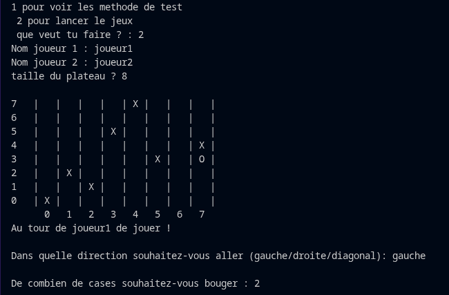
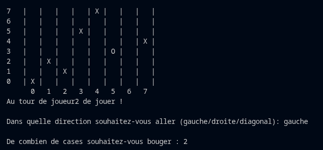
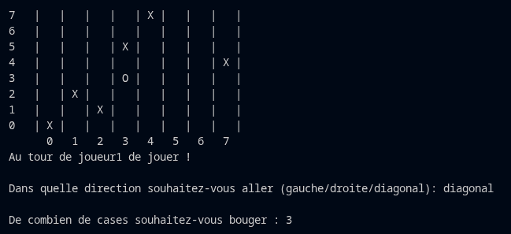
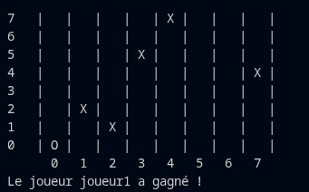

Jeu Withoff
Explication
Withoff est une implémentation du jeu de Wythoff, un jeu combinatoire à deux joueurs jouable en console. Un pion est placé aléatoirement sur la ligne du haut ou la colonne de droite d'un plateau carré. À tour de rôle, les joueurs déplacent ce même pion vers le coin inférieur gauche, en choisissant une direction (gauche, bas ou diagonale) et un nombre de cases. Le joueur qui parvient à poser le pion exactement dans ce coin remporte la partie. Le plus difficile a été de bien gérer la validation des déplacements (empêcher le pion de sortir du plateau) et l'alternance propre entre les deux joueurs. Le jeu se joue uniquement dans terminal.
Captures d'écran




Code
/**
* Demande a l'utilisateur dans quelle direction il
* veut aller puis le nombre de cases a déplacer,
* et met à jour la position du pion sur le plateau.
*/
void ajoutePion(char[][] plateau) {
int nbCase;
String mouvement;
do {
mouvement = SimpleInput.getString("Dans quelle direction souhaitez-vous aller : ");
} while (!mouvement.equals("gauche") && !mouvement.equals("bas") && !mouvement.equals("diagonal"));
do {
nbCase = SimpleInput.getInt("De combien de cases souhaitez-vous bouger : ");
} while (nbCase > plateau.length || nbCase < 0);
int nouvellePositionX = positionX;
int nouvellePositionY = positionY;
if (mouvement.equals("gauche")) {
nouvellePositionY = positionY - nbCase;
} else if (mouvement.equals("diagonal")) {
nouvellePositionX = positionX + nbCase;
nouvellePositionY = positionY - nbCase;
} else if (mouvement.equals("bas")) {
nouvellePositionX = positionX + nbCase;
}
if (nouvellePositionX >= 0 && nouvellePositionX < plateau.length
&& nouvellePositionY >= 0 && nouvellePositionY < plateau.length) {
plateau[positionX][positionY] = ' ';
positionX = nouvellePositionX;
positionY = nouvellePositionY;
plateau[positionX][positionY] = 'O';
} else {
System.out.println("Le mouvement est invalide. Le pion sort du tableau.");
ajoutePion(plateau); // redemande le mouvement
}
}
/**
* Vérifie si le pion a atteint le coin inférieur gauche,
* ce qui signifie la victoire du joueur qui vient de jouer.
*/
boolean Victoire(char[][] plateau) {
boolean victoire = false;
if (plateau[plateau.length - 1][0] == 'O') {
victoire = true;
}
return victoire;
}